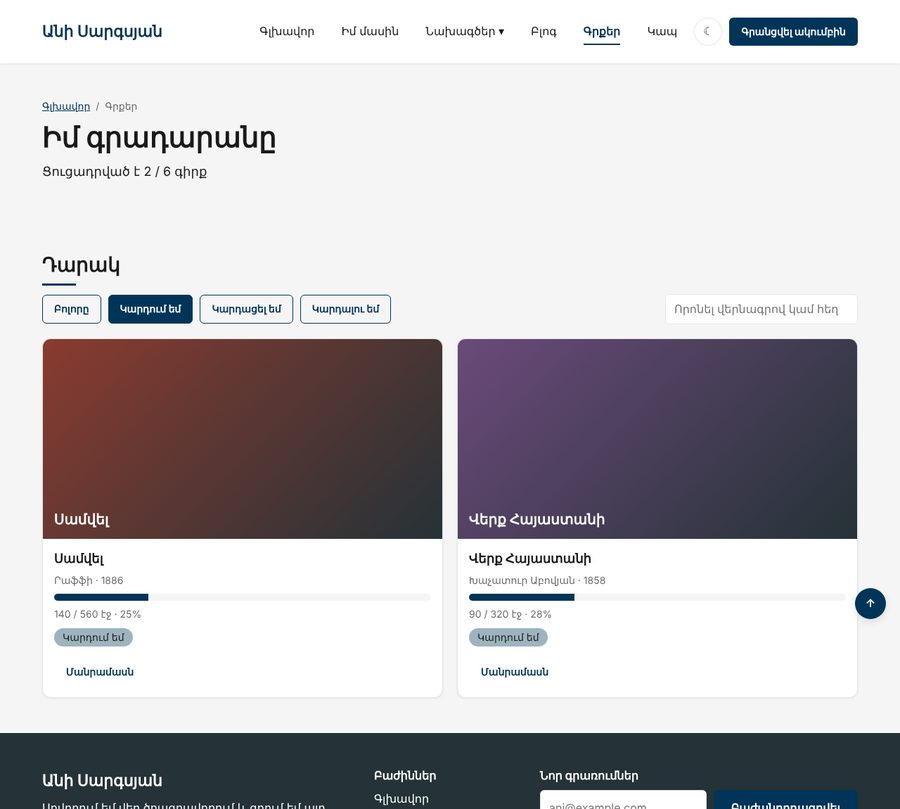
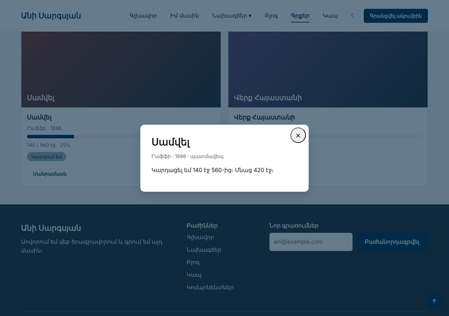
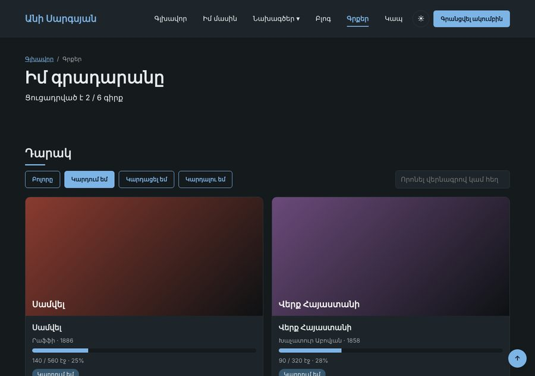

Տնային աշխատանք · JS Դաս 11 · մինի-նախագիծ
Էջը արձագանքում է օգտագործողին․ ֆիլտրի կոճակներ, որոնում ամեն տառի հետ, «Մանրամասն» պատուհան, մուգ թեմա և բուրգեր, որը փակվում է հղման սեղմելիս։ Կհանդիպես Դաս 11-ի տնայինի խնդրին՝ render-ից հետո կոճակները «մոռանում» են իրենց մշակիչները։
Դաս 01–11․ addEventListener, click, input, keydown, իրադարձության օբյեկտ, «հանել բոլորից → ավելացնել ընտրվածին»։ Դաշտի value-ն՝ առանց մանրամասների (Դաս 13)։ Դելեգացիան՝ Դաս 12-ում։



Աշխատիր քո կայքում (կամ նախորդ դասի օրինակում)։ CSS-ը տրված է, որ կենտրոնանաս JS-ի վրա․ HTML/CSS-ը արդեն գիտես։
starter/css/books-11.css — CSS-ը, որ ավելանում է այս դասինstarter/pages/books.html — «Գրքեր» էջի markup-ը (JS չկա, միայն <script>-ները)data-filter-ով և որոնման դաշտ (starter/pages/books.html)main-ի վերջումjs/site.js՝ բոլոր էջերումcurrentFilter և querygetVisibleBooks()՝ երկու filterrender()filterButtons.forEach(button => {
button.addEventListener("click", () => {
currentFilter = button.dataset.filter;
filterButtons.forEach(b => b.classList.remove("is-active"));
button.classList.add("is-active");
render();
});
});e.target === modal) և Escape-ովno-scrollinnerHTML-ը ստեղծել է նոր կոճակներ՝ առանց մշակիչներիrender()-ի վերջում կանչիր bindDetailsButtons()։ Դաս 12-ում կգտնենք ավելի լավըdocument.body.classList.toggle("dark"), իսկ մուգ տոկենները՝ CSS-ում (body.dark)navToggle.checked = false| Սխալ | Ինչպես ուղղել |
|---|---|
| Մոդալը փակվում է ներսում սեղմելիս | Ստուգիր e.target === modal, ոչ պարզապես սեղմումը |
| «Մանրամասն»-ը աշխատում է միայն մինչև առաջին ֆիլտրը | Մշակիչները կորել են innerHTML-ից։ Կախիր նորից render-ից հետո |
| Մի քանի կոճակ ակտիվ է | Նախ հանիր is-active-ը բոլորից |
| site.js-ը սխալ է տալիս էջում, որտեղ մոդալ չկա | site.js-ում միայն այն, ինչ կա բոլոր էջերում |
Սրանք Դաս 11-ի տնային աշխատանքի կետերն են։ «մինի-նախագծում» նշվածները արդեն կատարել ես վերևի քայլերում, մնացածը կատարիր առանձին ֆայլերում։
h1-ի տեքստը։ Երկրորդ սեղմումին՝ վերադարձնում է հինը։+ և −) և թիվ էկրանին։ Թիվը 0-ից ցածր չպիտի իջնի։document.body.classList.toggle("dark")։ մինի-նախագծումEscape-ով։ մինի-նախագծումdata-* ատրիբուտներով։input իրադարձությամբ պարբերությունը պիտի ցույց տա մուտքագրվածը իրական ժամանակում։ մինի-նախագծումclassList-ով)։render()-ը ֆիլտրված զանգվածով և ակտիվ կոճակին տուր is-active դասը։ մինի-նախագծումԵրբ բաժին 03-ի բոլոր կետերը նշված են, բացիր օրինակը և դրա կոդը example/js/-ում։ Գտիր մեկ բան, որ դու արել ես այլ կերպ, և մտածիր՝ որն է ավելի հասկանալի և ինչու։ Քո լուծումը կարող է տարբերվել և լինել ճիշտ։